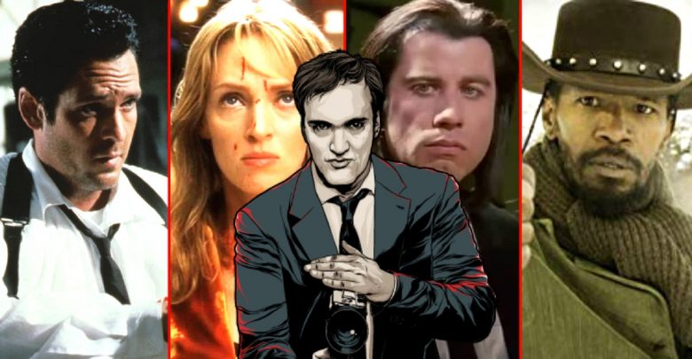

Película de 1997 escrita y dirigida por Quentin Tarantino basada en la novela Rum Punch (Cóctel explosivo, 1992) de Elmore Leonard. La protagonizan Pam Grier, Robert Forster, Robert De Niro, Samuel L. Jackson, Bridget Fonda, y Michael Keaton. Fue la tercera película de Tarantino después de su éxito tras Reservoir Dogs (1992) y Pulp Fiction (1994). Esta película está considerada como la película de Blaxploitation de Tarantino, al igual que Reservoir Dogs es su película de atracos, Pulp Fiction la de cine negro y Kill Bill la de artes marciales. La película fue criticada por algunos seguidores de Tarantino, ya que es un estilo muy diferente al de sus dos anteriores películas; ésta cuenta una historia no tan violenta, tiene una narración más clásica y relajada y la sangre no es tan abundante. Sin embargo, fue bien recibida por la crítica especializada.
Jackie Brown es una madura azafata de vuelo pillada con las manos en la masa mientras actúa como correo de dinero negro para un peligroso delincuente. Los agentes que la arrestan deciden darle la oportunidad de evitar la cárcel, siempre y cuando les ayude a capturar a su jefe. A partir de este momento, Jackie empezará a jugar un peligroso juego a varias bandas, con el objetivo de evitar la cárcel y sacar tajada de todo el asunto. Quentin Tarantino demostró su solidez como cineasta con esta adaptación de una novela de Elmore Leonard. En su tercera película, Jackie Brown, el director Quentin Tarantino ensaya una solución a esa interrogante a partir de una historia de enredos, dinero perdido y, por cierto, algunas balas. No demasiadas, si se compara con el resto de su filmografía. Todo con el inconfundible sonido R&B setentero de fondo. Aunque es calificada a menudo con el lugar común de "la menos Tarantiniana" de todas, el filme estrenado en 1997 es para algunos expertos su película favorita en el catálogo del oriundo de Knoxville.
| Django Desencadenado | ||||||||
|---|---|---|---|---|---|---|---|---|
|
Título original: Django Unchained
Año:2012
Duración: 165 min
País: Estados Unidos
Dirección / Guión: Quentin Tartantino
|
Imagen
| |||||||
Reparto: Jamie Foxx, Christoph Waltz, Leonardo DiCaprio, Kerry Washington, Samuel L. Jackson, Don Johnson, Walton Goggins, Laura Cayouette, Dennis Christopher, M.C. Gainey, James Remar, Michael Parks, Bruce Dern, James Parks, Cooper Huckabee, Doc Duhame, Franco Nero, Quentin Tarantino, James Russo, Jonah Hill, Dana Gourrier, Sammi Rotibi, Nichole Galicia, Ato Essandoh, David Steen, Amber Tamblyn, Zoe Bell, Russ Tamblyn, Tom Savini, Rex Linn, Lee Horsley, John Jarratt. | Sinópsis Ambientada en los estados del Sur estadounidense dos años antes de estallar la Guerra Civil, DJANGO DESENCADENADO está protagonizada por el actor ganador del Oscar Jamie Foxx en el papel de Django, un esclavo cuyo brutal pasado con sus antiguos dueños le lleva cara a cara con el cazarrecompensas de origen alemán, el Dr. King Schultz (el actor ganador del Oscar Christoph Waltz). Schultz le sigue la pista a los hermanos asesinos Brittle y Django es el único que podrá llevarle hasta ellos. El poco ortodoxo Schultz compra a Django con la promesa de dejarlo en libertad tras capturar a los Brittle - muertos o vivos.
|
Premios 2012: 2 Oscars: mejor guión original y actor secundario (Waltz). 5 nominaciones
2012: 2 Globos de Oro: Mejor guión y actor secundario (Waltz). 5 nominaciones
2012: Critics Choice Awards: Mejor guión original. Nominada a mejor película
2012: 2 Premios BAFTA: Mejor guión y actor secundario (Waltz). 5 nominaciones
2012: Círculo de Críticos de Nueva York: Nominada a mejor actor secundario (Waltz)
2012: National Board of Review (NBR): 10 mejores films y mejor actor sec. (Dicaprio)
2012: Asociación de Críticos de Los Angeles: Nominada a Mejor actor sec. (Waltz)
2012: American Film Institute: Top 10 - Mejores películas del año
2012: Premios David di Donatello: Mejor película extranjera
2012: Asociación de Críticos de Chicago: 2 nom. incluyendo mejor actor sec. (DiCaprio)
2012: Sindicato de Productores (PGA): Nominada a Mejor película
2013: Premios César: Nominada a Mejor película extranjera |
||||||